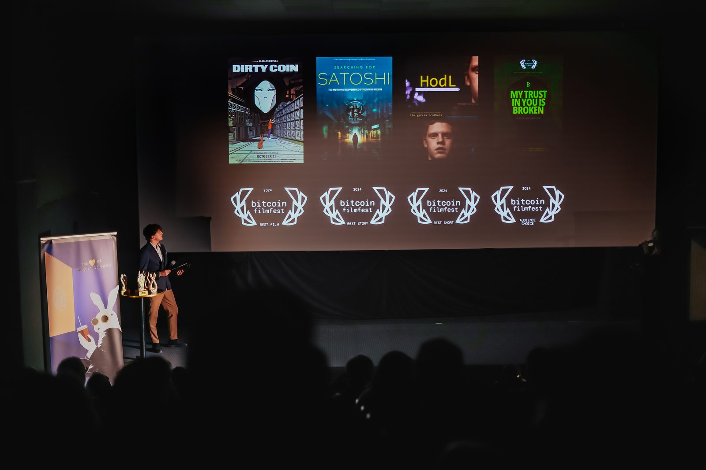
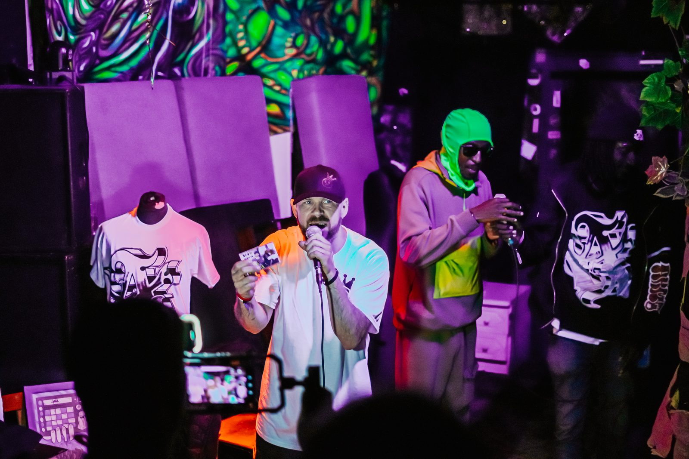

Ten dokument jest neutralnym pakietem informacyjnym dla redakcji, dziennikarzy, partnerów medialnych i autorów przygotowujących materiały o Bitcoin FilmFest 2026 oraz współlokowanym MoneroKon 2026 w Warszawie. Można z niego korzystać jako źródła do zapowiedzi, artykułów prasowych, wywiadów, notatek redakcyjnych, opisów wydarzenia, materiałów partnerskich, zaproszeń dla publiczności oraz tekstów o kulturze Bitcoina, kinie niezależnym, AI i prywatności finansowej.
- 1. Najważniejsze w skrócie
- 2. Opis jednozdaniowy
- 3. Krótki opis dla mediów
- 4. Dłuższy opis dla mediów
- 5. Dlaczego to ważne dla Polski
- 6. Geneza festiwalu
- 7. Misja
- 8. Cytaty Tomeka Kolodziejczuka
- 9. Czym jest Bitcoin Cinema
- 10. Program 2026 — struktura
- 11. Filmy w programie kinowym
- 12. Filmy VOD-only
- 13. AI Contest
- 14. Golden Rabbits
- 15. MoneroKon 2026
- 16. Community Stage i wydarzenia towarzyszące
- 17. Artyści i muzyka
- 18. Publiczność
- 19. Atmosfera i charakter
- 20. Przyjaciele i partnerzy
- 21. Goście i twórcy
- 22. Najważniejszy moment
- 23. Poprzednie edycje
- 24. VOD i IndeeHub
- 25. Dlaczego przyjechać osobiście
- 26. Główne kąty redakcyjne
- 27. Gotowe fragmenty
- 28. Proponowane nagłówki
- 29. Ton i słowa
- 30. Fakty do sprawdzenia
- 31. Dane praktyczne
- 32. Notka organizacyjna
- 33. Najkrótsza wersja
- 34. Główna myśl
1. Najważniejsze informacje w skrócie
Preferowana nazwa inicjatywy: Bitcoin FilmFest. Możliwe określenie opisowe: Bitcoin Film Festival, gdy mowa ogólnie o wydarzeniu. Charakter: festiwal filmowy, wydarzenie kulturalne, spotkanie społeczności, platforma twórców Bitcoin Cinema. Główne wezwanie dla czytelników: kup bilet i dołącz do festiwalu.
2. Jednozdaniowy opis wydarzenia
Bitcoin FilmFest 2026 to czwarta edycja największego festiwalu filmowego poświęconego kulturze Bitcoina, który od 4 do 7 czerwca zamieni warszawską Kinotekę w centrum kina, sztuki, AI, prywatności finansowej i społeczności wolnościowej.
3. Krótki opis dla mediów
Bitcoin FilmFest 2026 odbędzie się w dniach 4–7 czerwca w Kinotece w warszawskim Pałacu Kultury i Nauki. To czwarta edycja największego festiwalu filmowego poświęconego kulturze Bitcoina. W programie znajdują się projekcje filmów dokumentalnych, krótkich fabuł, komedii, produkcji AI, panele dyskusyjne, warsztaty, koncerty, wydarzenia społeczne, konkurs filmów AI z pulą nagród 2,5 miliona satoshi oraz gala Golden Rabbits. W 2026 roku wydarzenie jest współlokowane z MoneroKon — techniczną konferencją o prywatności i technologiach finansowych. Jeden bilet daje dostęp do obu wydarzeń.
4. Dłuższy opis dla mediów
Bitcoin FilmFest 2026 wraca do Warszawy jako czwarta edycja największego festiwalu filmowego poświęconego kulturze Bitcoina. Od 4 do 7 czerwca Kinoteka w Pałacu Kultury i Nauki stanie się miejscem spotkania filmowców, artystów, bitcoinowców, twórców AI, ludzi technologii, aktywistów prywatności, rodzin i ciekawych nowicjuszy.
Festiwal nie jest konferencją z dodanym blokiem filmowym. To wydarzenie kulturalne zbudowane wokół kina: dokumentów, fabuł, krótkich form, komedii, animacji AI, paneli dyskusyjnych, warsztatów i codziennych spotkań społeczności. Hasło edycji — „Fix the Money. Fix the Culture." — podkreśla, że Bitcoin jest nie tylko technologią pieniężną, ale także zjawiskiem kulturowym, które potrzebuje własnych historii, symboli, twórców i miejsc spotkania.
W 2026 roku Bitcoin FilmFest jest współlokowany z MoneroKon, konferencją poświęconą prywatności i technologiom finansowym. Wydarzenia odbywają się w tym samym miejscu i czasie, mają wspólne elementy społeczne, a jeden bilet uprawnia do udziału w obu programach. Bitcoin FilmFest pozostaje wydarzeniem bitcoinowym; współlokacja z MoneroKon dotyczy wspólnej przestrzeni, pokrywających się tematów i publiczności zainteresowanej wolnością finansową, prywatnością, decentralizacją i narzędziami permissionless.
5. Dlaczego to ważne wydarzenie dla Polski
Bitcoin FilmFest powstał w Polsce i rozwija się w Warszawie. To istotne, ponieważ wiele najgłośniejszych wydarzeń bitcoinowych odbywa się w Stanach Zjednoczonych, Szwajcarii, Salwadorze, Azji lub dużych centrach konferencyjnych. Tymczasem jedno z najciekawszych wydarzeń kulturalnych świata Bitcoina narodziło się i rośnie właśnie w Polsce.
Warszawa staje się na kilka dni miejscem spotkania międzynarodowej społeczności twórców i odbiorców kultury Bitcoina. W wydarzeniu biorą udział uczestnicy z Polski, Niemiec, Czech, Wielkiej Brytanii, Nowej Zelandii, Tajlandii, Hondurasu i innych krajów. Festiwal przyciąga zarówno doświadczonych bitcoinowców, jak i osoby początkujące, które trafiają do świata Bitcoina przez film, muzykę, sztukę i rozmowy.
Lokalizacja w Pałacu Kultury i Nauki ma także wymiar symboliczny. Budynek kojarzony z centralizacją i historią socjalistycznej dominacji staje się na czas festiwalu miejscem spotkania jednej z najbardziej zdecentralizowanych i wolnościowych kultur współczesności.
6. Geneza Bitcoin FilmFest
Bitcoin FilmFest narodził się z bardzo prostego impulsu. W 2022 roku polski filmowiec Pierre Corbin, związany ze środowiskiem Bitcoina, odwiedzał Warszawę. Planowano zorganizować pokaz filmu The Great Reset and the Rise of Bitcoin, ale pokaz ostatecznie się nie udał.
Zamiast tego Tomek Kolodziejczuk i filmowiec spotkali się na rozmowę przy dwóch piwach. W trakcie rozmowy pojawiła się myśl, że filmów związanych z Bitcoinem jest więcej niż jeden. Skoro tak, można byłoby pokazać kilka z nich, zaprosić publiczność i wybrać najlepsze.
Z tej rozmowy wyrósł pierwszy Bitcoin FilmFest. Pierwsza edycja odbyła się jako wydarzenie towarzyszące konferencji bitcoinowej w Warszawie (Weekend of Capitalism). Przyciągnęła około 120 osób i zaprezentowała osiem filmów, głównie dokumentalnych. Zainteresowanie było większe, niż zakładano, więc organizatorzy kontynuowali projekt w kolejnych latach.
Dziś Bitcoin FilmFest ma czwartą edycję i jest rozpoznawalnym centrum Bitcoin Cinema — nie tylko jako wydarzenie, ale jako sieć twórców, filmowców, artystów, sponsorów, widzów i partnerów. Festiwal organizował też mniejsze edycje „mini" w Lizbonie, Kapsztadzie, San Salvador i Lugano.
7. Misja: po co istnieje Bitcoin FilmFest
Bitcoin FilmFest istnieje po to, aby rozwijać Bitcoin Cinema jako gatunek, społeczność i ekosystem twórczy.
Organizatorzy wychodzą z założenia, że adopcja Bitcoina nie wydarzy się wyłącznie dzięki lepszym portfelom, prostszym aplikacjom, wykresom cenowym lub korzystnym regulacjom. Technologia jest konieczna, ale nie wystarczy. Potrzebna jest również zmiana kulturowa: język, opowieści, filmy, muzyka, symbole i wspólne doświadczenia.
Bitcoin FilmFest traktuje Bitcoin jako ruch kulturowy, a nie jedynie technologię lub instrument finansowy. Festiwal łączy ludzi, którzy opowiadają o wolności, odpowiedzialności, inflacji, prywatności, decentralizacji, suwerenności, rodzinie, prawdzie i przyszłości pieniądza.
8. Cytaty Tomeka Kolodziejczuka do wykorzystania
Poniższe cytaty można traktować jako wypowiedzi do materiałów prasowych. W razie publikacji dłuższego wywiadu warto zachować naturalny kontekst i nie skracać ich w sposób zmieniający sens.
O haśle „Fix the Money. Fix the Culture.": „Kiedy mówimy «Fix the Money. Fix the Culture.», chodzi o to, że wiele problemów świata ma głębszą przyczynę. Bitcoin dotyka źródła problemu pieniądza, ale żeby ludzie naprawdę zrozumieli wolność, odpowiedzialność i niezależność, potrzebujemy też kultury."
O Bitcoinie jako czymś więcej niż inwestycja: „Bitcoin nie jest tylko o inwestowaniu ani o pieniądzu w wąskim sensie. Jest o wolności, prawdzie i wyobraźni. Jest o tym, że można budować inne instytucje, inne relacje i inne historie."
O kinie: „Kino jest jednym z najpotężniejszych mediów, bo działa na wyobraźnię. Może informować, inspirować, motywować i opowiadać historie, które są prawdziwe, fikcyjne albo dopiero czekają, żeby stać się prawdą."
O najlepszych filmach bitcoinowych: „Najlepsze filmy o Bitcoinie nie wciskają ludziom Bitcoina do głowy. One sprawiają, że widz sam zaczyna zadawać lepsze pytania."
O społeczności: „Bitcoinowcy nie istnieją tylko w cyberprzestrzeni. Jesteśmy siecią przyjaciół."
O atmosferze festiwalu: „Nie mamy kultury VIP-ów. Każdy jest ważny. To wydarzenie działa dzięki przyjaciołom, wolontariuszom, artystom, sponsorom i ludziom, którzy po prostu chcą, żeby taka kultura istniała."
O Polsce i Pałacu Kultury: „Jest coś pięknego w tym, że festiwal kultury Bitcoina odbywa się w budynku, który kiedyś symbolizował centralną władzę. Na kilka dni przejmuje go jedna z najbardziej wolnościowych i zdecentralizowanych kultur na świecie."
O znaczeniu dla Polski: „To już samo w sobie jest newsem, że taki festiwal filmowy odbywa się w Polsce — Warszawa powinna być z tego dumna."
O AI: „AI daje wielu ludziom dostęp do tworzenia filmów po raz pierwszy. Chcemy, żeby bitcoinowi twórcy zajęli miejsce w tej rewolucji wcześnie — nie jako widzowie, ale jako autorzy."
O Golden Rabbits: „Każda legendarna nagroda filmowa zaczynała kiedyś jako coś małego. Golden Rabbit jest jeszcze młody, ale w świecie bitcoinowego kina może stać się bardzo ważnym znakiem jakości."
9. Czym jest Bitcoin Cinema
Bitcoin Cinema to szeroka i rozwijająca się kategoria. Nie ogranicza się do filmów dokumentalnych, które bezpośrednio tłumaczą, czym jest Bitcoin. Można wyróżnić kilka warstw:
- Filmy bezpośrednio o Bitcoinie — dokumenty i fabuły, w których Bitcoin jest głównym tematem: Satoshi Nakamoto, inflacja, self-custody, górnictwo, circular economies, prawo do posiadania pieniędzy, adopcja w różnych krajach, polityczne konsekwencje twardego pieniądza.
- Filmy, w których Bitcoin jest częścią fabuły — komedia, dramat, thriller, kryminał, romans lub film przygodowy, w którym Bitcoin staje się elementem intrygi. Historia dotyczy relacji, rodziny, ambicji lub przestępstwa, a Bitcoin działa jako katalizator wydarzeń.
- Filmy zgodne z etosem Bitcoina — nie wspominają o Bitcoinie, ale dotykają tematów bliskich jego kulturze: wolności, wyjścia z systemu, decentralizacji, self-actualization, prawdy, nieufności wobec centralnych narracji. Jako przykłady można wskazać The Matrix czy The Truman Show, choć powstały przed publikacją white paper.
- Kino finansowane, dystrybuowane lub organizowane przez Bitcoin — filmy finansowane przez bitcoinowych inwestorów, crowdfundowane w satsach, dystrybuowane przez bitcoinowe platformy albo sprzedawane w modelach opartych na płatnościach Lightning.
Bitcoin FilmFest nie tworzy tej kategorii odgórnie. Raczej ją odkrywa, mapuje i pomaga jej dojrzewać.
10. Program 2026 — struktura wydarzenia
Czwartek, 4 czerwca — Day 0. Dzień otwarcia ma charakter społeczny i muzyczny: zwiedzanie wieży Pałacu Kultury, a wieczorem Free the Money beforeparty w Samocentrum — muzyka na żywo, DJ-e, grill i płatności BTC. W programie m.in. DOT Dominus oraz sety DJ-skie RENIK i MadMunky.
Piątek, 5 czerwca. Poranek to aktywności i warsztaty, m.in. Bitcoin Run nad Wisłą oraz warsztaty AI Film Jam. Po południu dwa bloki kinowe — blok „Can everyone be an artist now?" (14:30–17:00) z tytułami Little Honeybadger, Crying baby, dancing bee, MaxisClub ep.3, Bitcoin Motorcycle Diaries oraz zamykający blok Coined in Watercolor. O 17:10 pamiątkowe zdjęcie grupowe na schodach Kinoteki. Po przerwie networkingowej blok „Changing minds with fiction" (18:00–20:30): Satoshi, Crypto Castle, South of Market, Bitcoin Castle i zamykające blok Self Custody. Wieczorem Vistula River disco w Cudzie nad Wisłą.
Sobota, 6 czerwca. Poranek: Paco Yoga w Parku Saskim, warsztaty Lightning Piggy, hackathon AI Film Jam. Po południu kolejne bloki kinowe — blok „Bitcoin on the ground" (14:30–17:00): Legend of Landi, Seeding Bitcoin, Hummingbird — The Bitcoin Jungle Story. Po przerwie blok „Making art in the fiat world" (18:00–20:30): Satoshi's Last Will, Finding Home — Ep. 4, Bitchamler — Freedom on the River, Bitcoin Beach: From El Salvador to Global Mission. Wieczorem Palace Bass Journey w Barze Studio i kino plenerowe Great Marty.
Niedziela, 7 czerwca. Community Stage, gala zamknięcia, głosowanie i wyniki konkursu AI, rozdanie nagród Golden Rabbits, koncert Roger9000, podziękowania i zapowiedź kolejnej edycji. Po części oficjalnej after-after w Amondo.
Kolejność i dokładne godziny mogą się zmieniać — aktualny program zawsze na stronie festiwalu.
11. Filmy w programie kinowym (18 tytułów)
Bitchamler — Freedom on the River. Dokument krótkometrażowy o serbskiej ekipie nad Dunajem, która przerabia rzeczny złom na Bitcoin i tworzy małą gospodarkę obiegu zamkniętego. Twórcy: Belgrade Bitcoin community. Czas: 25 min.
Bitcoin Castle. Czarna komedia / thriller z Niemiec. W odległym francuskim zamku relacja Astrid i Henninga zaczyna się rozpadać, gdy Henning — bitcoinowy prepper trzymający 42 BTC i zapasy jedzenia — czeka na nadchodzący kryzys. Twórca: Bruno Schiebel. Czas: 28 min.
Bitcoin Motorcycle Diaries. Godzinny „videozine" od Bitcoin Video Magazine — historie, postacie i rozmowy z globalnej bitcoinowej trasy. Na festiwalu krótki rozdział na scenie; pełna edycja dostępna w VOD. Czas: ok. 60 min.
Coined in Watercolor. Krótki film o duchu i kulturze społeczności Bitcoina, bardziej ludzki i emocjonalny niż techniczny. Występuje akwarelista Timothy Murphy, muzykę stworzył Murphy Robertson. Twórca: Gavin Robertson. Czas: 12 min.
Crying baby, dancing bee. Animowana, pełna symboli podróż Buzzbee, afrykańskiej Bitcoin Queen, która wraca z Jamajki do RPA, łączy się z naturą na Table Mountain i przechodzi przez Tree of Life do Bitcoin Cathedral. Czas: 11 min.
Crypto Castle. Satyryczna autobiograficzna komedia osadzona w San Francisco w 2015 roku. Młoda kobieta przypadkowo trafia do hacker house'u z czterema współlokatorami obsesyjnie zainteresowanymi wczesną kulturą Bitcoina. Twórczyni: Viv Ford. Czas: 9 min.
Finding Home — Ep. 4. Czwarty odcinek serii dokumentalnej o bitcoinowcach poszukujących suwerennego domu przez jedzenie, wolność i rodzinę. Odcinek przedstawia Roger9000 — multiinstrumentalistę i rezydenta artystycznego BFF. Twórca: Avi Burra. Czas: 32 min.
Finding Satoshi. Czteroletnie śledztwo dokumentalne nad tożsamością Satoshi Nakamoto. Dziennikarz śledczy William D. Cohan (autor bestsellerów NYT) i prywatny detektyw Tyler Maroney (QRI) prowadzą widza przez początki Bitcoina, opierając się na rzadkich wywiadach z Michaelem Saylorem, Josephem Lubinem, Fredem Ehrsamem, Billem Gatesem, Philem Zimmermannem, Bramem Cohenem, Jamesonem Loppem, Karą Swisher, Bjarne Stroustrupem i wieloma innymi — i pewnie wskazuje osobę stojącą za Bitcoinem. Na BFF: twórcy filmu pojawiają się na żywo, pokażemy zwiastun, a posiadacze biletów otrzymają możliwość obejrzenia pełnego filmu online na findingsatoshi.com. Twórcy: Matthew Miele i Tucker Tooley. Czas: 101 min.
From El Salvador to Global Mission. Dokument śledzący drogę od rybackiej wioski El Zonte, która zainspirowała adopcję Bitcoina jako legal tender w Salwadorze, do globalnej fali lokalnych społeczności bitcoinowych. Czas: 30 min.
Hummingbird — The Bitcoin Jungle Story. Dokument o Bitcoin Jungle, oddolnej gospodarce cyrkularnej kwitnącej na pacyficznym wybrzeżu Kostaryki — gdzie płatności Lightning napędzają shop'y surferskie, restauracje i codzienne życie społeczności Uvita i Dominical. Twórca: HODL. Czas: 75 min.
Legend of Landi. Szczegóły wkrótce.
Little Honeybadger. Szczegóły wkrótce.
MaxisClub ep.3. Animowany bitcoinowy sitcom — odcinek, w którym dzieci stawiają czoła potworowi fiat inflacji i uczą się self-custody. Familijny, ostry i wyraźnie pomarańczowy. Czas: 23 min.
Satoshi. Szczegóły wkrótce.
Satoshi's Last Will. Szczegóły wkrótce.
Seeding Bitcoin. Krótki dokument Satoshi Labs o cyrkularnych gospodarkach Bitcoin w Afryce.
Self Custody. Krótki thriller akcji ze Stanów Zjednoczonych. Ojciec odkrywa, że bonus w Bitcoinie z 2014 roku jest dziś wart miliony — aby odzyskać dostęp, musi przypomnieć sobie hasło do portfela, mierząc się z hakerami i zagrożeniami z dark webu. Twórca: Garrett Patten. Czas: 31 min. Europejska premiera na BFF 2026. Obsada: Adrian Grenier.
South of Market. Szczegóły wkrótce.

12. Filmy VOD-only (3 tytuły)
Każdy nabywca biletu otrzymuje dostęp VOD po festiwalu przez IndeeHub (link na e-mail). VOD obejmuje zarówno program kinowy, jak i tytuły dostępne wyłącznie online — łącznie ponad 20 tytułów więcej niż w kinie, w tym filmy z poprzednich edycji. Poniżej tytuły dostępne wyłącznie w VOD (nie pokazywane w kinie):
Bitcoin: Digital Gold. Trzecia część bitcoinowej trylogii Torstena Hoffmanna — Bitcoin jako naturalny następca złota. Twórca: Torsten Hoffmann.
Gimp and the Hitman. Czarna, relacyjna komedia z elementami satyry władzy, kontroli pieniędzy i kontroli narracji. Film pełnometrażowy. Czas: 74 min.
Rabbit Hole. Pełnometrażowy film fantasy o misji dostarczenia tajemniczego dysku z finansową mocą przed nocą Bożego Narodzenia. Twórca: Brian McGuire. Czas: 92 min.
13. AI Contest — Future of Money, Money of the Future
Konkurs ma zachęcić nowych twórców do opowiadania o przyszłości pieniądza przy pomocy narzędzi AI. Dla organizatorów nie jest to wyłącznie dodatek technologiczny, ale eksperyment kulturowy: próba uruchomienia nowej generacji bitcoinowych storytellerów.
14. Golden Rabbits
Golden Rabbits to nagrody Bitcoin FilmFest. Motyw królika nawiązuje do białego królika jako symbolu wejścia do szerszego świata pytań, snów, opowieści i odkrywania rzeczywistości pod powierzchnią oficjalnych narracji.
W 2026 roku przyznane zostaną cztery nagrody: Best Movie, Best Short, Best Story oraz Audience Choice / Audience Award. Nagrody wręczane są podczas gali zamknięcia. Laureaci wykorzystują festiwalowe laury w materiałach promocyjnych, na plakatach i w trailerach. Fizyczna statuetka ma formę abstrakcyjnych króliczych uszu, w kolorze białym i złotym, z elementami złotego brokatu.
Jury 2026: Brad Mills, Valerie B., Terence Michael, Pierre Corbin, Avi Burra, Tomek Kolodziejczuk.
Laureaci poprzednich edycji:
- BFF'24 — Best Film: Dirty Coin · Best Story: Searching for Satoshi · Best Short: HodL · Audience Choice: My Trust In You Is Broken.
- BFF'25 — Best Movie: No More Inflation · Best Short: Satoshi, the Creation of Bitcoin (Artur Machado) · Best Story: Hotel Bitcoin (Manuel Sanabria i Carlos Villaverde).

15. MoneroKon 2026 — współlokacja
MoneroKon 2026 odbędzie się w tym samym miejscu i czasie co Bitcoin FilmFest. Miejsce: Kinoteka, Warszawa. Czas: 5–7 czerwca, godziny dzienne. Relacja z BFF: wspólna przestrzeń, wspólne daty, wspólne wydarzenia społeczne. Jeden bilet daje dostęp do obu wydarzeń.
Bitcoin FilmFest pozostaje wydarzeniem bitcoinowym; współlokacja dotyczy pokrywających się tematów i publiczności, nie zmiany tożsamości BFF. MoneroKon jest techniczną konferencją o prywatności i technologiach finansowych. Dla BFF ważny jest wspólny obszar wartości: prywatność, decentralizacja, permissionless money, open source, wolność finansowa i odporność na cenzurę.
Sugerowane sformułowanie dla prasy: „Bitcoin FilmFest pozostaje wydarzeniem bitcoinowym. Współlokacja z MoneroKon wynika z pokrywających się tematów: prywatności, wolności finansowej, narzędzi permissionless i kultury decentralizacji."
16. Community Stage, warsztaty i wydarzenia towarzyszące
Community Stage — wspólna scena z MoneroKon: lightning talks, dema, mini-panele i krótkie wystąpienia społeczności.
Warsztaty — potwierdzone: AI movie creation (piątek rano, powiązane z konkursem AI) oraz Lightning Piggy (budowanie open-source bitcoinowych skarbonek przyjmujących satsy przez Lightning).
Panele dyskusyjne (tematy 2026) — czy finansowanie publiczne pomaga kulturze i kinu; kondycja kina niezależnego; jak AI rewolucjonizuje kino; kolejne tematy zostaną ogłoszone.
Wydarzenia społeczne — Free the Money beforeparty w Samocentrum (czwartek); Vistula River disco w Cudzie nad Wisłą (piątek); Palace Bass Journey w Barze Studio z Lazy1 (sobota); pożegnanie w Amondo (niedziela); Bitcoin Run nad Wisłą; Bitcoin Walk; joga w parku; poranne aktywności i spotkania. Potwierdzone są także wycieczki po Warszawie, wyjście na strzelnicę oraz wizyta w Fotoplastikonie — warszawskim muzeum dawnej techniki kinowej.
Społeczny wymiar festiwalu jest kluczowy. Organizatorzy podkreślają, że ludzie przychodzą dla filmów, ale wracają ze względu na ludzi, rozmowy, relacje i atmosferę.
17. Artyści i muzyka
Bitcoin FilmFest przyciąga nie tylko filmowców. Wokół festiwalu działa coraz więcej muzyków, malarzy, fotografów, autorów, performerów i twórców AI. Wśród artystów i muzyków wymienianych przy edycji 2026: Roger9000, RENIK, Lazy1, Longy, MadMunky, DOT Dominus. Roger9000 jest multiinstrumentalistą i artystą związanym z BFF; w programie znajduje się także Finding Home — Ep. 4, odcinek dokumentalny poświęcony jego historii.

18. Publiczność
Bitcoin FilmFest jest skierowany nie tylko do zaawansowanych bitcoinowców. Typowi uczestnicy: bitcoinowcy z doświadczeniem, osoby początkujące, ciekawi nowicjusze, filmowcy, artyści, muzycy, twórcy AI, rodziny, programiści, ludzie freedom tech, aktywiści prywatności, przedsiębiorcy, inwestorzy i producenci zainteresowani wspieraniem filmów oraz osoby zainteresowane kulturą niezależną.
Organizatorzy szacują, że w poprzednich edycjach około 10% publiczności stanowiły osoby nowe, które odkrywały Bitcoina przez festiwal, filmy lub znajomych.
19. Atmosfera i charakter wydarzenia
Bitcoin FilmFest nie ma charakteru wielkiej konferencji targowej. Nie opiera się na stoiskach, expo, kulturze VIP-ów ani dużych korporacyjnych sponsorach. To wydarzenie kameralne, społeczne i oddolne, które działa dzięki przyjaciołom, wolontariuszom, artystom, partnerom i sponsorom.
Określenia atmosfery: grassroots, kameralny, międzynarodowy, filmowy, wolnościowy, niezależny, przyjacielski, high-vibe, artystyczny, społecznościowy, Bitcoin-only.
Unikać: crypto event, blockchain expo, inwestycyjna konferencja, targi krypto, event spekulacyjny, konferencja tradingowa. Słowo „crypto" tylko wtedy, gdy jest częścią tytułu filmu (jak Crypto Castle) albo gdy tekst świadomie kontrastuje Bitcoina z szerszym rynkiem crypto.
20. Przyjaciele, partnerzy i wsparcie
Bitcoin FilmFest używa języka „friends" zamiast klasycznego „sponsors". Wspierający są przedstawiani jako przyjaciele festiwalu, nie korporacyjne logotypy przyklejone do wydarzenia. To celowo niskobudżetowy, oddolny festiwal, finansowany głównie przez tych przyjaciół.
Na stronie wydarzenia wymienieni są m.in.: Cryptosteel, Angor, IndeeHub, Bitcoin District Próspera, Satsback, Cashify, Comparic, Bitrefill, Polish Bitcoin Association.
Kluczowi członkowie zespołu festiwalu to — obok założycieli Tomka Kolodziejczuka i Pierre'a Corbina — Kasia Szczypska, Selale Malkacoglu, Błażej Szkudlarek, Florina Mahalean i Nomishka Dilshan. Dodatkowo w komunikacji można wspominać o wsparciu środowiska bitcoinowego i innych osób zaangażowanych w promocję oraz organizację.
21. Goście i twórcy
Wśród twórców i gości związanych z edycją 2026 wymienieni zostali: Alana Mediavilla, Zack Mahoney, Orlando Herrera, Bruno Schiebel, Gavin Robertson.
Przed publikacją imienne listy gości warto sprawdzać z organizatorami — mogą ulec zmianie wraz z logistyką podróży, wizami, potwierdzeniami i dostępnością twórców.
22. Najważniejszy moment z poprzednich edycji
Jednym z najbardziej symbolicznych momentów w historii Bitcoin FilmFest był halving Bitcoina w 2024 roku. Festiwal odbywał się wtedy w czasie zbliżonym do bloku 840 000. Ponieważ dokładny moment halvingu nie jest możliwy do przewidzenia z kalendarzową precyzją, przypadek sprawił, że wydarzył się on dokładnie podczas festiwalu, po pokazie filmu Gods of Their Own Religion.
Publiczność odliczała moment halvingu jak bitcoinowy Nowy Rok. Na Pałacu Kultury i Nauki wyświetlono logo Bitcoina, widoczne dla tysięcy mieszkańców Warszawy. Nagrania i zdjęcia obiegły później internet oraz media branżowe. To wydarzenie dobrze pokazuje, że Bitcoin FilmFest nie jest tylko serią projekcji — to miejsce, w którym społeczność tworzy wspólne symbole i wspomnienia.
23. Poprzednie edycje — szybkie fakty
- Bitcoin FilmFest powstał w Warszawie w listopadzie 2022 roku.
- Pierwsza edycja była kameralna — zgromadziła około 120 osób i pokazała osiem filmów.
- Liczba filmów rośnie z edycji na edycję: 1. — 8 · 2. — 12 · 3. — 10 · 4. (2026) — 18.
- W pierwszych latach dominowały dokumenty; z czasem pojawiło się więcej fabuł, komedii, muzyki, sztuki, warsztatów i wydarzeń społecznych.
- BFF'24 zapamiętano m.in. dzięki halvingowi i projekcji logo Bitcoina na Pałacu Kultury po bloku 840 000.
- BFF'25 przyciągnął ponad 200 gości z ponad 20 krajów.
- Festiwal organizował mniejsze edycje „mini" w Lizbonie, Kapsztadzie, San Salvador i Lugano.
- W 2026 roku festiwal ma 4. edycję i spodziewa się około 200–300 uczestników.
24. Rola VOD i IndeeHub
BFF 2026 nie kończy się na pokazach kinowych. Każdy nabywca biletu otrzymuje dostęp VOD po festiwalu — link przychodzi na e-mail — dzięki współpracy z IndeeHub. Katalog VOD obejmuje ponad 20 tytułów więcej niż program kinowy, w tym filmy z poprzednich edycji: filmy pokazywane na żywo w Kinotece, tytuły dostępne wyłącznie online, możliwość obejrzenia filmów, których uczestnik nie zdążył zobaczyć, oraz przedłużenie festiwalu poza Warszawę i poza jeden weekend.
Dla prasy warto podkreślić, że BFF jest wydarzeniem fizycznym, ale rozwija też dystrybucyjną i społecznościową infrastrukturę Bitcoin Cinema.
25. Dlaczego warto przyjechać osobiście
Bitcoin FilmFest ma VOD, ale organizatorzy podkreślają, że sens wydarzenia leży w spotkaniu na żywo. Filmy działają inaczej oglądane z publicznością; wiele żartów i odniesień jest zrozumiałych lepiej wśród społeczności; po projekcjach odbywają się dyskusje; można poznać twórców i innych uczestników; festiwal tworzy realne relacje, nie tylko internetowe kontakty; to okazja do spotkania ludzi z kilku środowisk: Bitcoin, film, sztuka, AI, privacy tech i kultura wolnościowa.
26. Główne kąty redakcyjne
1. Polska jako centrum kultury Bitcoina. Możliwy tytuł: Bitcoin FilmFest i MoneroKon przyjeżdżają do Warszawy. Polska znów staje się centrum bitcoinowej kultury.
2. Bitcoin ma już swoje kino. Możliwy tytuł: Bitcoin Cinema: jak z technologii rodzi się nowy język filmu.
3. Fix the Money. Fix the Culture. Możliwy tytuł: Nie wystarczą lepsze portfele. Dlaczego Bitcoin potrzebuje kultury.
4. AI i przyszłość kina niezależnego. Możliwy tytuł: AI, satsy i kino: Bitcoin FilmFest szuka nowych storytellerów.
5. Prywatność i permissionless money. Możliwy tytuł: Bitcoin, prywatność i kino w jednym miejscu. MoneroKon i Bitcoin FilmFest w Kinotece.
6. Kinoteka i Pałac Kultury jako symbol. Możliwy tytuł: Bitcoin w Pałacu Kultury. Warszawska Kinoteka na kilka dni zmieni się w centrum wolnościowej kultury.
27. Gotowe krótkie fragmenty do wykorzystania
Fragment 1 — neutralny news. Bitcoin FilmFest 2026 odbędzie się od 4 do 7 czerwca w warszawskiej Kinotece. To czwarta edycja największego festiwalu filmowego poświęconego kulturze Bitcoina. W programie pokazy filmów, panele dyskusyjne, warsztaty, konkurs AI z pulą nagród 2,5 miliona satoshi, gala Golden Rabbits, koncerty i wydarzenia społeczne. Tegoroczna edycja jest współlokowana z MoneroKon, a jeden bilet daje dostęp do obu wydarzeń.
Fragment 2 — kulturalny. Bitcoin FilmFest pokazuje, że Bitcoin coraz wyraźniej wychodzi poza język technologii, ekonomii i inwestycji. Staje się tematem kina, sztuki, muzyki i opowieści o wolności, odpowiedzialności, prywatności oraz przyszłości pieniądza. Hasło tegorocznej edycji — „Fix the Money. Fix the Culture." — oddaje ambicję festiwalu: rozwijać nie tylko narzędzia, ale także wyobraźnię społeczną wokół Bitcoina.
Fragment 3 — lokalny / polski. Dla polskiej społeczności Bitcoina wydarzenie ma szczególne znaczenie. Bitcoin FilmFest powstał w Warszawie i właśnie tutaj rozwija się jako międzynarodowe centrum Bitcoin Cinema. W czasie gdy wiele dużych wydarzeń branżowych odbywa się poza Polską, jedno z najciekawszych kulturalnych spotkań świata Bitcoina przyciąga twórców i uczestników do Kinoteki w Pałacu Kultury i Nauki.
Fragment 4 — o MoneroKon. W 2026 roku Bitcoin FilmFest odbędzie się równolegle z MoneroKon, konferencją poświęconą prywatności i technologiom finansowym. Wydarzenia mają wspólną lokalizację, daty i część programu społecznego, a jeden bilet daje dostęp do obu. Organizatorzy podkreślają jednak, że Bitcoin FilmFest pozostaje wydarzeniem bitcoinowym; współlokacja wynika z pokrywających się tematów, takich jak prywatność, decentralizacja, open source i permissionless money.
Fragment 5 — o AI. Ważną częścią programu jest konkurs filmów AI „Future of Money, Money of the Future" z pulą nagród 2,5 miliona satoshi. Filmy mają mieć od 1 do 5 minut i być tworzone z pomocą AI. Zwycięzcę wybierze publiczność podczas festiwalu. Konkurs ma zachęcić nowe pokolenie twórców do opowiadania o pieniądzu, wolności i technologii.
28. Proponowane nagłówki
- Bitcoin FilmFest i MoneroKon przyjeżdżają do Warszawy
- Warszawa na kilka dni stanie się centrum kultury Bitcoina
- Bitcoin ma już swoje kino. Czwarta edycja Bitcoin FilmFest w Kinotece
- Fix the Money. Fix the Culture. Bitcoin FilmFest wraca do Pałacu Kultury
- Nie tylko konferencja, nie tylko kino. Bitcoin FilmFest 2026 w Warszawie
- Bitcoin, prywatność i AI w Kinotece. BFF i MoneroKon razem w Warszawie
- Polska gości największy festiwal filmowy poświęcony kulturze Bitcoina
- Kino, satsy i wolność. Bitcoin FilmFest 2026 zaprasza do Warszawy
- Od dwóch piw do Bitcoin Cinema. Historia festiwalu, który wyrósł w Polsce
- Golden Rabbits, AI shorts i Pałac Kultury. Co zobaczymy na BFF 2026
29. Słowa i ton, których warto unikać
Unikać: crypto event, krypto event, blockchain expo, targi kryptowalut, konferencja inwestycyjna, wydarzenie tradingowe, altcoinowy festiwal, spekulacyjne wydarzenie, hype event, event dla inwestorów.
Ostrożnie: „crypto" — tylko w tytule Crypto Castle lub przy wyraźnym kontraście z Bitcoinem; „blockchain" — tylko w kontekście technicznym; „VIP" — BFF celowo unika tej kultury; „sponsorzy" — w języku BFF preferowane jest „friends" / „przyjaciele", choć w tekście prasowym można użyć neutralnego „partnerzy".
Preferowane określenia: Bitcoin FilmFest, Bitcoin Cinema, kultura Bitcoina, festiwal filmowy, wydarzenie kulturalne, społeczność, kino niezależne, prywatność, permissionless money, wolność finansowa, decentralizacja, self-custody, sats, Lightning.
30. Fakty do szybkiego sprawdzenia przed publikacją
Przed publikacją warto sprawdzić aktualną wersję programu na stronie Bitcoin FilmFest — kolejność seansów i godziny mogą się zmieniać. Do weryfikacji: pełna lista filmów live i VOD; kolejność bloków filmowych; godziny projekcji; lista gości obecnych fizycznie; status ewentualnej kinowej premiery Finding Satoshi; szczegóły konkursu AI; lista partnerów/przyjaciół; linki do grafik, plakatów i stillsów; zasady odbioru Trezor Model T przez nabywców biletów.
31. Dane praktyczne dla uczestników
32. Notka organizacyjna
Bitcoin FilmFest to oddolna inicjatywa założona w Warszawie w listopadzie 2022 roku. Jej misją jest rozwijanie Bitcoin Cinema jako gatunku, społeczności i ekosystemu twórczego. Festiwal łączy filmowców, artystów, technologów, bitcoinowców i ciekawych nowych uczestników wokół historii o pieniądzu, wolności i przyszłości.
Założycielami są Tomek Kolodziejczuk i Pierre Corbin. Tomek jest zawodowym aktywistą wolnościowym, który od ponad pięciu lat promuje Bitcoina w polskiej społeczności — organizuje polskie spotkania maksymalistów, prowadzi konferencje i tłumaczy książki. Kluczowi członkowie zespołu to Kasia Szczypska, Selale Malkacoglu, Błażej Szkudlarek, Florina Mahalean i Nomishka Dilshan.
33. Najkrótsza wersja do wklejenia
Bitcoin FilmFest 2026 odbędzie się 4–7 czerwca w Kinotece w warszawskim Pałacu Kultury i Nauki. To czwarta edycja największego festiwalu filmowego poświęconego kulturze Bitcoina. W programie znalazły się filmy dokumentalne, krótkie fabuły, komedie, produkcje AI, panele dyskusyjne, warsztaty, koncerty, Community Stage, konkurs AI z pulą 2,5 miliona satoshi oraz gala Golden Rabbits. Tegoroczna edycja jest współlokowana z MoneroKon, konferencją o prywatności i technologiach finansowych. Jeden bilet daje dostęp do obu wydarzeń, a każdy nabywca biletu festiwalowego otrzymuje Trezor Model T. Hasło edycji brzmi: „Fix the Money. Fix the Culture."
34. Główna myśl dla redakcji
Bitcoin FilmFest 2026 to nie tylko wydarzenie filmowe i nie tylko spotkanie bitcoinowców. To znak, że Bitcoin dojrzewa jako kultura. Ma już własne filmy, twórców, żarty, symbole, muzykę, nagrody, miejsca spotkań i pytania, które wychodzą daleko poza cenę. W 2026 roku jednym z najważniejszych miejsc tej kultury będzie Warszawa.